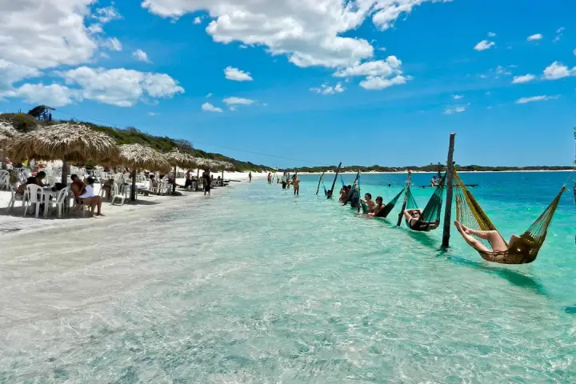

Descobrindo as Praias do Nordeste
O Nordeste brasileiro abriga algumas das praias mais impressionantes do país...
De destinos famosos como Porto de Galinhas até vilas mais tranquilas...

O Nordeste brasileiro abriga algumas das praias mais impressionantes do país...
De destinos famosos como Porto de Galinhas até vilas mais tranquilas...
